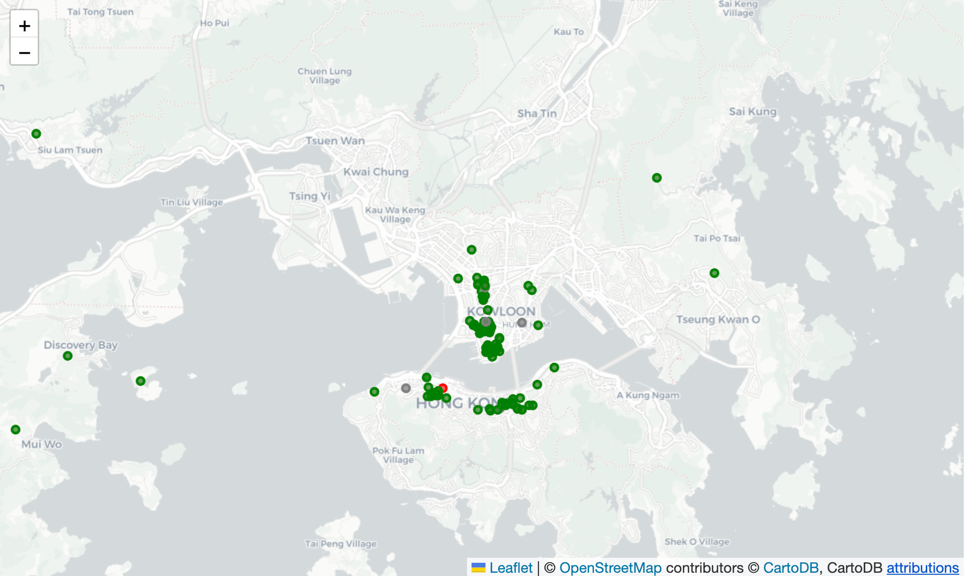
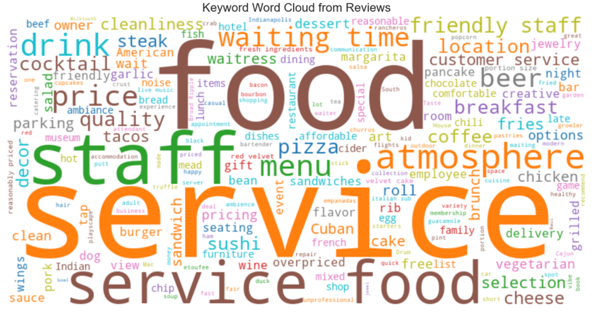

LLM for Structuring Information
Related API: ccai9012.llm_utils · ccai9012.viz_utils
Overview
Category: Unstructured Text Analysis & Knowledge Structuring
Modular Components: - Text Preprocessing Pipeline - LLM API Calling - LLM Embedding Extractor - Vector Clustering - Q&A over Documents - Heatmap Visualization - Wordcloud generation
Use Cases
- How do short-term rental reviews reflect neighborhood livability over time?
- Can we detect major sentiment shifts before and after a major policy announcement or public event?
- How is generative AI affecting job market? (Job market analysis across industry and time)
- Can we use LLMs to detect gaps between declared policy priorities and proposed implementation measures in urban planning documents?
- How are terms like “resilience”, “sustainability”, or “equity” defined and operationalized differently across documents?
Code Examples
Urban Sentiment Classification
Content: - Extract structured sentiment (location, themes, polarity) from reviews using LLM - Use NER + classification - Create sentiment maps to inform urban design
Dataset:
- Yelp open dataset
- Source: https://business.yelp.com/data/resources/open-dataset/ (Please press the Download JSON red button to get the dataset, and put the file under starter_kits/2_llm_structure_output/urban_sentiment/data folder.)
Required Packages: LangChain, DeepSeek, transformers, pandas, json

Yelp Review heatmap.
Airbnb Reviews Analysis
Content: - Collect Airbnb housing and review data (public dataset Inside Airbnb) - Classification of reviews’ sentiments of different aspects (location, host, facility) - Create Airbnb aspect-wise impression heatmap and wordcloud
Dataset: - Airbnb review dataset - Source: https://insideairbnb.com/get-the-data/

Airbnb Review keywords wordcloud.
Energy Action Plan PDF Structuring
Content: - Extract building/energy info from Energy Action Plans (PDFs) - Summarize content into JSON format for analysis - Enable comparison across tribal regions over time
Dataset: - Energy Action Plans documents - Source: https://cchrc.org/
Required Packages: LangChain, PyMuPDF, pdfplumber, transformers, pandas
Literature Review of Topics
Content: - Webcrawl website for relevant papers - Go through document by document with specific questions - Identify insights & keywords - Catalogue & represent findings
Dataset: Collection of literatures from specific topic